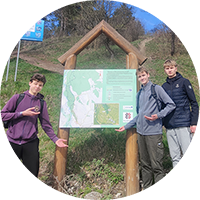
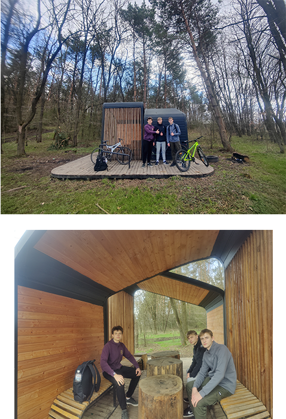

Головна сторінка
Вовчинець
Місце відпочинку
Підпечерська печера

По дорозі до Підпечер ми зустріли
чудове відпочинкове місце, де можна присісти,
перечекати дощ, розпалити вогнище поблизу
або просто поспілкуватися з друзями.